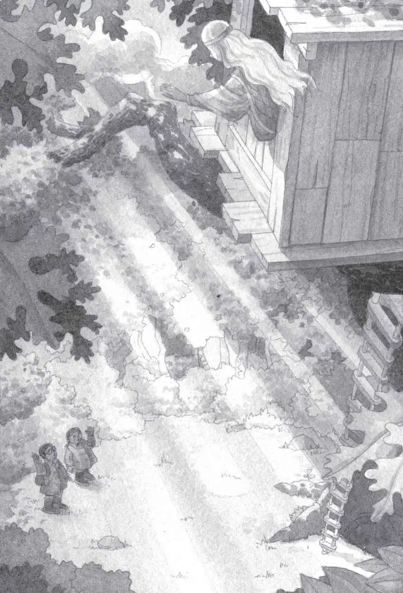

Annie found her voice first. “The M person,” she whispered.
“Yes. I’m the M person,” said Morgan.
“Wh-where are you from?” asked Jack.
“Have you ever heard of King Arthur?” said Morgan.
Jack nodded.
“Well, I am King Arthur’s sister,” said Morgan.
“You’re from Camelot,” said Jack. “I’ve read about Camelot.”
“What did you read about me, Jack?” said Morgan.
“You—you’re a witch.”
Morgan smiled. “You can’t believe everything you read, Jack.”
“But are you a magician?” said Annie.
“Most call me an enchantress. But I’m also a librarian,” said Morgan.
“A librarian?” said Annie.
“Yes. And I’ve come to the 20th century, your time, to collect books. You are lucky to be born in a time with so many books.”
“For the Camelot library?” asked Jack.
“Precisely,” said Morgan. “I travel in this tree house to collect words from many different places around the world. And from many different time periods.”
“Did you find books here?” said Jack.
“Oh yes. Many wonderful books. I want to borrow them for our scribes to copy.”
“Did you put all the bookmarks in them?” said Jack.
“Yes. You see, I like the pictures in the books. Sometimes I want to visit the scenes in the pictures. So all the bookmarks mark places I wish to go.”
“How do you get there?” asked Annie.
“I placed a spell on the tree house,” said Morgan. “So when I point to a picture and make the wish, the tree house takes me there.”
“I think you dropped this in dinosaur times,” said Jack.
He handed the gold medallion to Morgan.
“Oh, thank you! I wondered where I’d lost it,” she said. She put the medallion into a hidden pocket in her cape.
“So can anybody work the spell?” asked Annie. “Anybody who tries it?”
“Oh dear, no! Not just anybody,” Morgan said. “You two are the only ones besides me to do it. No one else has ever even seen my tree house before.”
“Is it invisible?” asked Annie.
“Yes,” said Morgan. “I had no idea it would ever be discovered. But then you two came along. Somehow you hooked right into my magic.”
“H-how?” asked Jack.
“Well, for two reasons, I think,” explained Morgan. “First, Annie believes in magic. So she actually saw the tree house. And her belief helped you to see it, Jack.”
“Oh man,” said Jack.
“Then you picked up a book, Jack. And because you love books so much, you caused my magic spell to work.”
“Wow,” said Annie.
“You can’t imagine my dismay when you started to take off for dinosaur times. I had to make a very quick decision. And I decided to come along.”
“Oh, so you were the pteranodon!” said Annie.
Morgan smiled.
“And the cat and the knight and Polly!” said Annie.
“Yes,” said Morgan softly.
“You were all these things to help us?” asked Jack.
“Yes, but I must go home now. The people in Camelot need my help.”
“You’re leaving?” whispered Jack.
“I’m afraid I must,” said Morgan.
She picked up Jack’s backpack and handed it to him. Jack and Annie picked up their raincoats. It had stopped raining.
“You won’t forget us, will you?” asked Annie, as they put their raincoats on.
“Never,” said Morgan. She smiled at both of them. “You remind me too much of myself. You love the impossible, Annie. And you love knowledge, Jack. What better combination is there?”
Morgan le Fay touched Annie’s forehead gently. And then Jack’s. She smiled.
“Good-bye,” she said.
“Good-bye,” said Annie and Jack.
Annie left the tree house first. Jack followed. They climbed down the rope ladder for the last time.
They stood below the oak tree and looked up.
Morgan was looking out the window. Her long white hair blew in the breeze.

Suddenly the wind began to blow.
The leaves began to shake.
A loud whistling sound filled the air.
Jack covered his ears and squeezed his eyes shut.
Then everything was silent.
Absolutely silent.
Jack opened his eyes.
The tree house was gone.
All gone.
Absolutely gone.
Annie and Jack stood a moment, staring up at the empty oak tree. Listening to the silence.
Annie sighed. “Let’s go,” she said softly.
Jack just nodded. He felt too sad to speak. As they started walking, he put his hands into his pockets.
He felt something.
Jack pulled out the gold medallion. “Look!” he said. “How did—?”
Annie smiled. “Morgan must have put it there,” she said.
“But how?”
“Magic,” said Annie. “I think it means she’ll be coming back.”
Jack smiled. He clutched the medallion as he and Annie took off through the wet, sunny woods.
As they walked, the sun shined through the woods. And all the wet leaves sparkled.
Everything, in fact, was shining.
Leaves, branches, puddles, bushes, grass, vines, wild flowers—all glittered like jewels.
Or gleamed like gold.
Annie had been right, thought Jack.
Forget the treasure chest.
They had treasure at home. A ton of it. Everywhere.